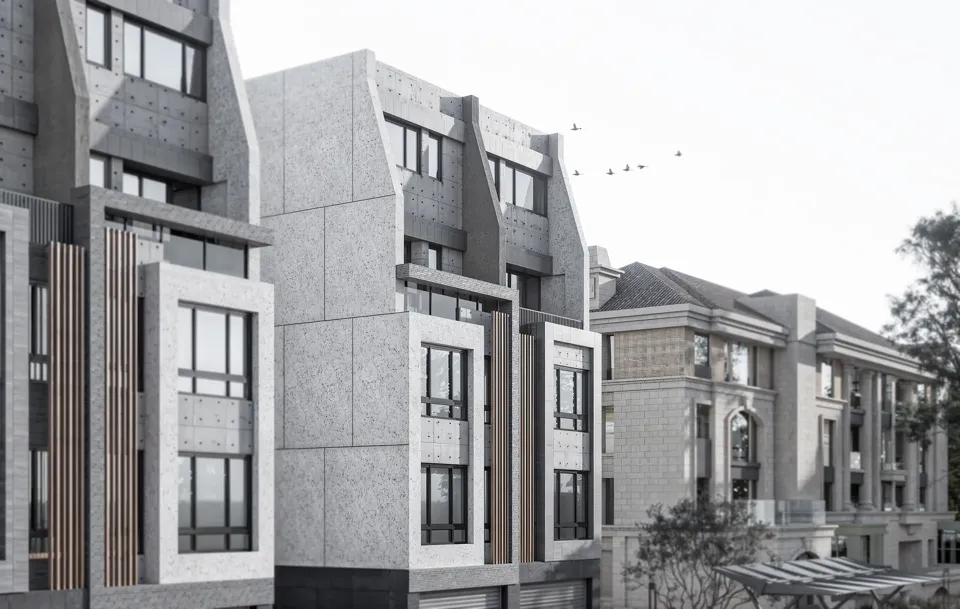
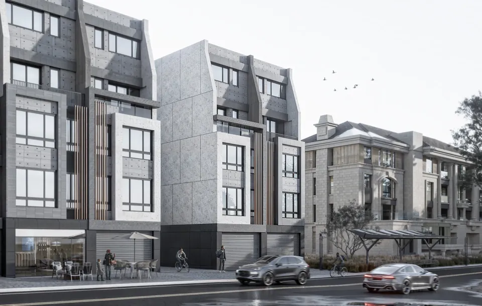
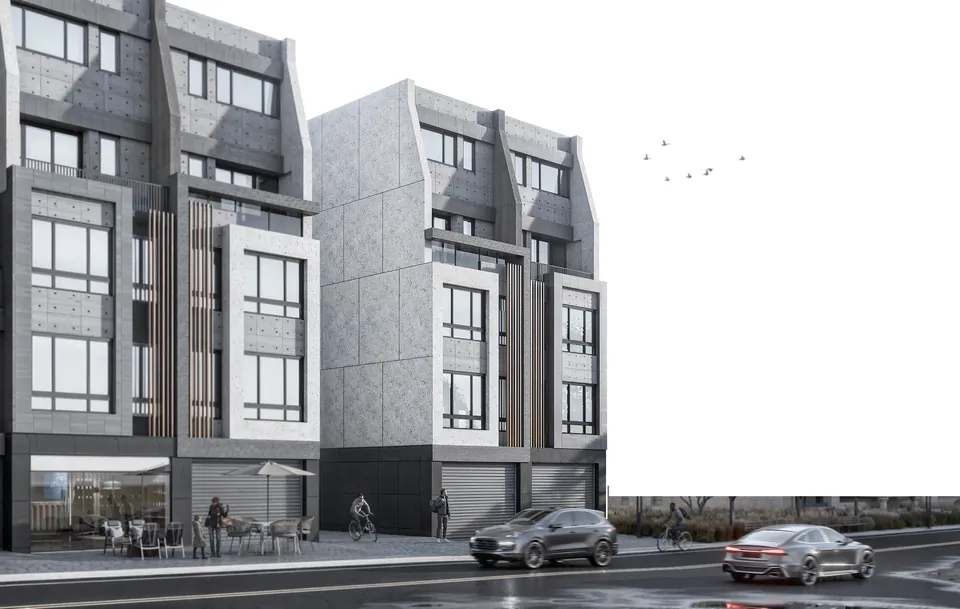

Datong · Fifteen Residences
大同案 · 十五戶透天住宅
Residential scale, materials and urban context.

Design approach
Early planning—product positioning, massing and plan strategy, cost and sequencing feasibility—followed by façade coordination: style, materials and proportion, with schedules, quality standards and coordination between design, sales and construction.
Connection to research
The project reinforces the need to consider environmental and material realities at the earliest design stage.
- Year
- 2024–2025
- Location
- Zhunan, Miaoli
- Role
- Developer-side project lead (founder, for a former employer)
- Type
- Residential · 15 townhouses
- Context
- Fifteen townhouses · founder’s involvement 2024 – June 2025
This is the founder’s prior-employment experience: work performed for a former employer, not an RSA commission. No RSA-based environmental analysis is claimed for this project. Images are design visualisations of the project.



Scope of work
Early planning
Product positioning, massing and plan strategy, cost and sequencing feasibility
Exterior design
Façade style, material selection, rhythm and proportion
Delivery management
Schedule milestones, quality standards, site communication and documents
Project integration
Single point of contact for design, sales agency and construction; issue tracking and decisions
Outcome
Early planning completed and design coordination under way during the founder’s involvement; the project continued after June 2025.
This work was done by the founder while employed by a residential developer, before RSA was founded. RSA as a company had no role in this project. Statutory architectural design and sign-off were not part of this role.